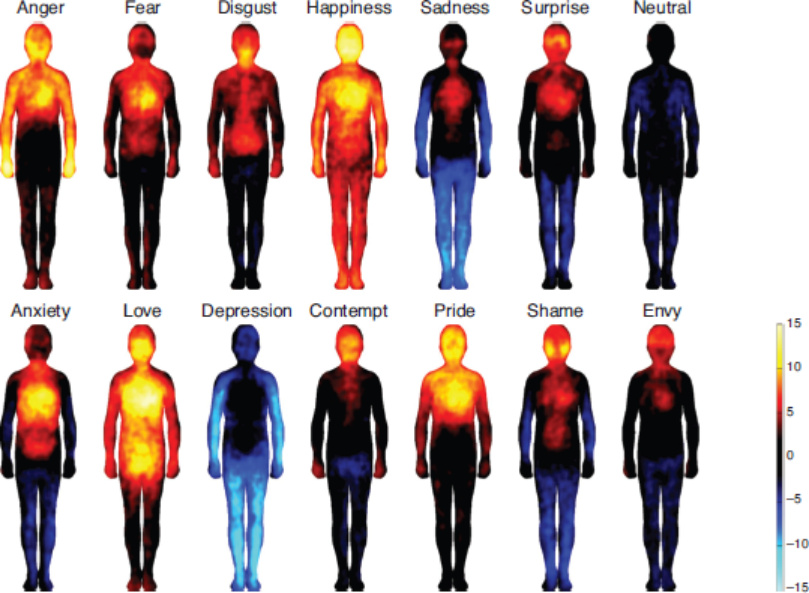
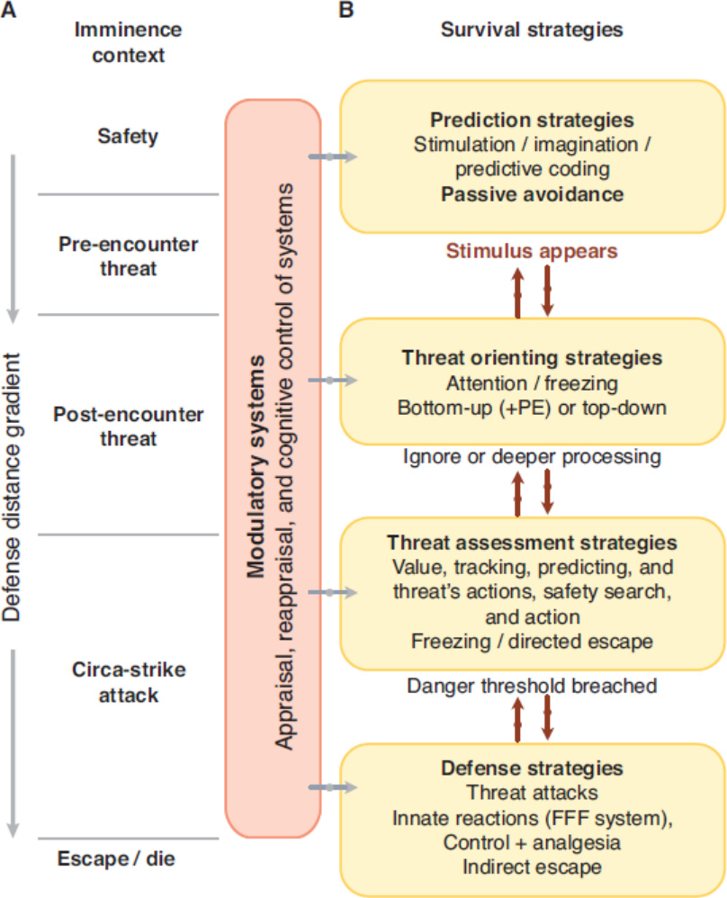

Chương 2 — Một Khung Nghiên Cứu Cảm Xúc
Trước khi thảo luận về sinh học thần kinh của cảm xúc, điều quan trọng là phải đặt nền tảng cho ý chúng ta muốn nói khi dùng từ "cảm xúc." Chương này sẽ trình bày một quan điểm mang tính triết học rộng rãi, theo đó các cảm xúc là các trạng thái chức năng. Giải thích chính xác điều đó có nghĩa là gì sẽ đòi hỏi một chút kiên nhẫn, nhưng rất quan trọng để tránh những nhầm lẫn về sau. Điều này đặc biệt then chốt, bởi thường thì ít có sự đồng thuận giữa các nhà khoa học khác nhau trong cách họ dùng từ cảm xúc. Thậm chí một số nhà sinh học thần kinh, chẳng hạn như Joseph LeDoux tại Đại học New York, phòng thí nghiệm của ông đã tiến hành một số nghiên cứu có ảnh hưởng nhất về điều kiện hóa sợ hãi ở chuột, chủ trương rằng chúng ta không nên dùng các từ chỉ cảm xúc (như sợ hãi), hay thậm chí cả từ chung "cảm xúc," cho một số lĩnh vực điều tra khoa học nhất định (LeDoux 2012). LeDoux đưa ra một số lý do chính đáng cho đề xuất của ông: thực tế là các nhà khoa học rất lộn xộn trong cách họ dùng từ "cảm xúc" (LeDoux 2017). Đặc biệt, đôi khi họ muốn nó chỉ đến các cảm giác, và đôi khi lại muốn nó chỉ đến các hành vi hay trạng thái bên trong. Vấn đề phát sinh khi những ý nghĩa khác nhau này bị lẫn lộn.
Chúng tôi đồng tình với những lo ngại của LeDoux nhưng rút ra một kết luận khác. Chúng tôi tin chắc rằng từ cảm xúc nên được dùng trong mọi cuộc điều tra khoa học về cảm xúc—dù cần có sự làm rõ ở những chỗ cần thiết. Thêm vào đó, chúng tôi nghĩ rằng một số từ chỉ các cảm xúc cụ thể nên được dùng trong diễn ngôn khoa học—nhưng cần nhiều sự làm rõ hơn nữa. Những ví dụ có thể có về các từ mà nhà khoa học cảm xúc trong tương lai sẽ dùng là sợ hãi, giận dữ, và ghê tởm. Tuy nhiên, như chúng tôi đã lưu ý ở chương 1, chúng tôi cũng tin rằng những thuật ngữ này sẽ cần được xem xét lại khi khoa học cảm xúc tiến triển. Hơn nữa, có nhiều từ trong ngôn ngữ của chúng ta (và còn nhiều hơn trong các ngôn ngữ khác, như chúng tôi đã lưu ý ở chương trước) mà một số người sẽ mô tả là liên quan đến cảm xúc, nhưng chúng tôi cho rằng còn quá sớm để dùng chúng một cách khoa học, vì chúng ta chưa biết liệu chúng có thực sự chỉ đến
các loại trạng thái cảm xúc riêng biệt (hoặc thậm chí có phải là cảm xúc hay không). Điều đó không có nghĩa là chúng ta không thể có một khoa học về cảm xúc; nó chỉ có nghĩa là hiện tại chúng ta nên tập trung vào một tập hạn chế các từ và khái niệm. Đây cũng là một lý do khiến cuốn sách của chúng ta không tập trung vào các cảm xúc cụ thể (dù chúng tôi có dùng chúng làm ví dụ), mà thay vào đó tập trung vào cảm xúc nói chung.
Hiện nay, có nhiều cuộc tranh luận trong triết học và tâm lý học về cảm xúc không thể giải quyết được, vì chúng xoay quanh những câu hỏi mang tính ngữ nghĩa hơn là những câu hỏi có thể kiểm chứng bằng thực nghiệm. Sẽ dễ dàng hơn để đưa ra một khung rõ ràng cho việc điều tra cảm xúc nếu chúng ta tập trung vào cảm xúc nói chung, thay vì lún sâu vào những câu hỏi về có những cảm xúc cụ thể nào, hay chúng ta muốn phân loại cảm xúc của mình chi tiết đến mức nào. Chúng ta cần kiên nhẫn xây dựng một khoa học về cảm xúc, bắt đầu từ những khía cạnh của cảm xúc dễ được điều tra khoa học nhất, rồi dần dần mở rộng phạm vi khi chúng ta nắm bắt chủ đề này ngày càng tốt hơn. Việc tình yêu, sự hoài nghi, hay kinh ngạc có phải là những cảm xúc cụ thể cần điều tra khoa học hay không không phải là những câu hỏi chúng ta cần trả lời ở giai đoạn này.
Khởi động: Những Câu Hỏi Thần Kinh Học Về Cảm Xúc
Chúng ta sẽ khởi động cho các vấn đề khái niệm của chương này bằng một bài tập ngắn, tương tự như điều chúng ta đã làm ở chương 1 khi liệt kê một số giả định và câu hỏi, nhưng được triển khai đầy đủ hơn về phương pháp luận. Hãy chọn một câu hỏi mà các nhà khoa học muốn hiểu cảm xúc nên quan tâm, và cố gắng tiếp cận câu hỏi đó từ nhiều góc độ: điều gì đã biết, điều gì chưa biết, và chúng ta có thể tìm ra như thế nào?
Câu hỏi rộng: Não tạo ra trạng thái tương ứng với một cảm xúc như thế nào? Điều gì đang xảy ra bên trong não tôi khi tôi ở trong trạng thái giận dữ, sợ hãi, hay buồn bã?
Giả thuyết làm việc: Các cảm xúc là những trạng thái bên trong của não gây ra những thay đổi bên ngoài có thể quan sát được trong hành vi; những thay đổi sinh lý bên trong có thể quan sát được trong trạng thái của cơ thể; những thay đổi ở các trạng thái tinh thần khác; và, trong một số điều kiện và ở một số loài, những thay đổi trong những gì chúng ta nhận biết có ý thức ("cảm giác," mà ở con người thường có thể mô tả bằng lời nói). Các trạng thái cảm xúc được tạo ra bởi những khuôn mẫu đặc trưng về không gian và thời gian
của hoạt động thần kinh (điện) trong não, cùng với những thay đổi tương ứng trong hóa học của não (hormone, chất điều hòa thần kinh, v.v.). Chúng điều phối một loạt các phản ứng. Nếu chúng ta hiểu các trạng thái cảm xúc được tạo ra như thế nào, thì về nguyên tắc chúng ta có thể (a) dự đoán trạng thái cảm xúc bên trong của một người bằng cách "đọc ra" (đo lường) hoạt động não của họ; (b) tạo ra một trạng thái cảm xúc cụ thể bằng cách thao tác các mạch thần kinh hay hóa học cụ thể của não; và (c) khôi phục chức năng bình thường cho một trạng thái cảm xúc không thích nghi (chẳng hạn như trầm cảm) bằng cách điều chỉnh lại các mạch thần kinh hay hóa học cụ thể của não.
Chẳng phải chúng ta đã có thể làm tất cả những điều đó rồi sao? Nhiều nhà thần kinh học sẽ lập luận, chẳng hạn, rằng chúng ta đã có thể:
- Dự đoán liệu một người có "đang cảm thấy sợ hãi" hay không bằng cách giải mã điều đó từ các khuôn mẫu kích hoạt của não;
- Gợi ra trải nghiệm hay biểu hiện (ở động vật) của các cảm xúc cụ thể (chẳng hạn như hoảng loạn) bằng cách kích thích điện các vùng cụ thể của não;
- Điều trị trầm cảm bằng cách dùng SSRI (chất ức chế tái hấp thu serotonin có chọn lọc, một loại thuốc chống trầm cảm như Prozac), hoặc trong một số trường hợp bằng kích thích não sâu (DBS), một phương pháp điều trị trầm cảm xâm lấn hơn dùng dòng điện kích thích não.
Vậy thì còn gì để hiểu? Ngay cả khi chúng ta có thể làm tất cả những điều đó (và khi xem xét kỹ thì có lý do để nghi ngờ chúng ta có thể), chúng vẫn chưa đủ để trả lời câu hỏi một cảm xúc "hoạt động" như thế nào trong não. Lý do có thể thấy qua một phép so sánh:
- Chúng ta có thể dự đoán liệu một chiếc xe có đang chuyển động hay không, và nó chuyển động nhanh như thế nào, bằng cách "chụp ảnh" đồng hồ tốc độ của nó. Điều đó không có nghĩa là chúng ta hiểu ô tô hoạt động ra sao. Nó chỉ có nghĩa là chúng ta đã tìm thấy thứ gì đó có thể đo lường và có tương quan chặt chẽ với một khía cạnh chức năng của nó.
Cũng như với đồng hồ tốc độ, việc chụp ảnh hoạt động của hạch hạnh nhân (hay bất cứ nơi nào khác trong não), khi thiếu hiểu biết thêm, không cho chúng ta biết gì về cơ chế nhân quả và chỉ cung cấp một "dấu hiệu" có thể tương quan với một cảm xúc.
- Chúng ta có thể bước vào một căn hộ hiện đại, và bằng cách thử nhầm đủ kiểu, xác định nút nào trên bảng điều khiển bật đèn trong bếp. Điều đó không có nghĩa là chúng ta hiểu việc nhấn nút đó dẫn đến bật đèn trong bếp (chứ không phải, chẳng hạn, phòng khách) như thế nào—đặc biệt là nếu chúng ta chẳng biết gì về điện và điện tử.
Cũng như trường hợp bật đèn, công dụng của SSRI trong điều trị trầm cảm, như nhiều phương pháp điều trị y khoa khác, đã được phát hiện một cách tình cờ. Các bác sĩ thường xuyên dùng các liệu pháp mà cơ chế tác động của chúng chưa được hiểu rõ, nhưng thường (nhưng không phải lúc nào cũng) có hiệu quả dựa trên kinh nghiệm lâm sàng. Vấn đề phát sinh khi có những bệnh nhân trầm cảm không đáp ứng với điều trị—khi đó chúng ta bất lực. Cố chữa cho những bệnh nhân này mà không hiểu não tạo ra trạng thái cảm xúc như thế nào cũng giống như cố chữa bệnh dịch hạch ở thế kỷ mười lăm mà không biết rằng vi khuẩn và virus gây ra bệnh truyền nhiễm.
Những ví dụ trên và những khoảng trống đã bộc lộ trong hiểu biết hiện tại của chúng ta làm nổi bật cấu trúc chung về cách chúng ta muốn có thể hiểu các cảm xúc. Một nhà tâm lý học có thể tìm kiếm một dạng hiểu hơi khác, và hài lòng với một kiểu giải thích khác, so với một nhà sinh học thần kinh. Trong cuốn sách này, chúng tôi muốn đưa ra một điểm khởi đầu phù hợp cho cả nhà thần kinh học lẫn nhà tâm lý học. Chúng ta muốn có một bức tranh nào đó về hình dạng của một lời giải thích về cảm xúc, dù chỉ mới ở mức nguyên tắc, để chúng ta có một mục tiêu cụ thể, và một thước đo cho thấy chúng ta có đang tiến bộ hướng tới nó hay không. Chúng ta có thể áp dụng kiểu điều tra biện chứng đã dùng cho câu hỏi rộng ở trên vào một câu hỏi cụ thể hơn để xem nó triển khai như thế nào.
Câu hỏi cụ thể hơn: Chúng ta hiểu gì về sinh học thần kinh của "sợ hãi," và còn gì để hiểu? Có thể nói rằng sợ hãi là cảm xúc được hiểu rõ nhất, xét từ góc độ sinh học thần kinh. Để minh họa những khoảng trống trong tri thức/hiểu biết của chúng ta, dưới đây là một mô tả ngắn gọn và khá phác họa (tất yếu phải bỏ qua nhiều chi tiết) về một quan điểm chuẩn về những gì xảy ra khi chúng ta trở nên "sợ hãi," để đáp trả một mối đe dọa:
- Khi một kích thích đe dọa được phát hiện, hoạt động trong hạch hạnh nhân của chúng ta tăng lên.
- Hoạt động tăng lên của hạch hạnh nhân thúc đẩy hoạt động tăng lên ở các mục tiêu "hạ lưu" của các nơ-ron hạch hạnh nhân (những tế bào nhận đầu vào từ hạch hạnh nhân), lần lượt kiểm soát các khía cạnh khác nhau của phản ứng sợ hãi như tăng cường đông cứng (phản ứng hành vi), tăng nhịp tim (phản ứng tự chủ), và tăng giải phóng hormone căng thẳng (phản ứng nội tiết). Các cấu trúc thần kinh trung gian cho những hiệu ứng đa dạng này nằm ở các vùng như vùng dưới đồi và chất xám quanh ống dẫn nước ở não giữa (PAG), như được minh họa trong hình 2.1. Không được thể hiện trong hình, nhưng cũng quan trọng không kém, là các chiếu thiếu hiểu rõ từ hạch hạnh nhân đến nhiều vùng của vỏ não, có lẽ trung gian cho nhiều hiệu ứng mà một cảm xúc có đối với các quá trình nhận thức khác.
- Hệ quả là chúng ta trở nên hưng phấn hơn, mong đợi hơn, cảnh giác hơn, và nhạy bén hơn. Lòng bàn tay ra mồ hôi, miệng khô lại, và còn nhiều khuôn mẫu phản ứng tự chủ và cơ thể khác (hộp 2.1). Chúng ta có thể ngừng ăn hay uống (hoặc bất cứ việc gì khác đang làm) và nhìn quanh. Chúng ta có thể đại tiện hay tiểu tiện không kiểm soát được, tùy theo mức độ sợ hãi của mình. Chúng ta trải nghiệm một "cảm giác" chủ quan của sự sợ hãi. Nếu được hỏi, chúng ta sẽ trả lời rằng mình đang sợ hãi hay lo âu.
- Chúng ta có thể sợ hãi ở mức độ tương đối cao hơn hay thấp hơn, tùy thuộc vào cường độ hay độ gần của mối đe dọa, ngữ cảnh mà chúng ta trải nghiệm nó (một căn phòng tối so với ngoài trời dưới ánh sáng ban ngày), và kinh nghiệm trước đây của chúng ta với kích thích đó. Các phản ứng sinh lý và hành vi của chúng ta có thể khác nhau tùy theo mức độ sợ hãi, cũng như trải nghiệm có ý thức của chúng ta (chẳng hạn, tiểu tiện không kiểm soát có thể chỉ xảy ra khi mức độ sợ hãi rất cao).
- Khả năng ra quyết định của chúng ta, và chính các quyết định, có thể bị ảnh hưởng khi chúng ta ở trong trạng thái sợ hãi.
- Sau một lúc, nếu không có mối đe dọa nào thành hình hay chúng ta không bị tổn hại gì, sự sợ hãi dần lắng xuống và chúng ta trở lại với công việc của mình.

Hình 2.1: Sự điều phối nhiều thành phần của phản ứng sợ hãi bởi hạch hạnh nhân. Điều này liên quan đến các chiếu từ nhân trung tâm của hạch hạnh nhân đến các vùng ở thân não và vùng dưới đồi, dựa trên dữ liệu thu được chủ yếu từ các loài gặm nhấm. Tuy nhiên, còn nhiều chiếu hơn những chiếu được thể hiện ở đây, bao gồm cả các chiếu đến vỏ não, và cũng có các đầu vào đến hạch hạnh nhân từ hầu hết các mục tiêu mà nó chiếu tới, khiến việc tách bạch nhân và quả trong hệ thống trở nên phức tạp. Xem chương 6 để biết chi tiết. Được sửa đổi với sự cho phép từ Davis 1992.
Hộp 2.1. Có thể đọc các cảm xúc từ tâm sinh lý không?
Đã có một lịch sử lâu dài về sự tham gia của hệ thần kinh tự chủ vào các hiệu ứng phối hợp của một trạng thái cảm xúc. Nhà tâm lý học William James là người đầu tiên đề xuất một lý thuyết cụ thể, lập luận rằng các phản ứng tự chủ cũng như các phản ứng cơ thể khác có thể được sinh vật cảm nhận và lần lượt gây ra các trải nghiệm có ý thức về cảm xúc. Những quan điểm gần đây hơn, được thảo luận ở chương 9, đưa ra một phiên bản chi tiết hơn và mang tính sinh học thần kinh hơn của quan điểm này. Họ cho rằng cảm nhận nội tạng (nhận thức của chúng ta về trạng thái của cơ thể) là nền tảng cho trải nghiệm của chúng ta về các cảm giác cảm xúc. Những quan điểm này, cùng với sự dễ dàng trong việc đo một số biến số tự chủ, đã dẫn đến việc sử dụng rộng rãi tâm sinh lý trong nghiên cứu cảm xúc (Cacioppo, Tassinary, và Berntson 2007).
Các thước đo tâm sinh lý trong phòng thí nghiệm thường bao gồm đo phản ứng độ dẫn da (một thước đo sự hưng phấn tự chủ giao cảm), điện tâm đồ (đo nhịp tim của bạn,
từ đó có thể rút ra cả các thước đo giao cảm lẫn phó giao cảm), giãn đồng tử (dễ dàng thu được với các thiết bị theo dõi mắt hiện đại, và một phần là thước đo tự chủ), hô hấp, huyết áp, và điện cơ mặt (dán các điện cực nhỏ lên da mặt để đo những cử động rất nhỏ của cơ mặt và biểu hiện). Ngoài ra còn có nhiều thước đo khác về nguyên tắc, vì hệ thần kinh tự chủ thực sự chi phối tất cả các cơ quan trong cơ thể. Thêm vào đó, các thước đo hormone và chất chuyển hóa trong máu, nước tiểu, hay nước bọt có thể cung cấp các thước đo thô về những khía cạnh mang tính bền bỉ hơn của cảm xúc, chẳng hạn như sự hưng phấn do căng thẳng.
Gần như không còn nghi ngờ gì rằng các trạng thái cảm xúc gây ra những thay đổi trong hoạt động của hệ thần kinh tự chủ, và do đó gây ra những thay đổi ở cơ trơn, nội tạng, và các thước đo nội tiết được hệ thần kinh tự chủ kiểm soát. Tuy nhiên, cho đến nay vẫn chưa có bằng chứng tốt nào cho thấy các thước đo thường thu được trong phòng thí nghiệm, tự bản thân chúng, là đủ để phân biệt giữa các cảm xúc cụ thể (Siegel et al. sắp xuất bản).
Thế nhưng người bình thường lại tin rằng các cảm xúc cụ thể được cảm nhận ở những bộ phận cụ thể của cơ thể. Một nghiên cứu của nhà nghiên cứu người Phần Lan Lauri Nummenmaa và các cộng sự đã đưa ra một minh họa trực quan gọn gàng về điều này (Nummenmaa et al. 2014). Các nhà nghiên cứu thiết kế một công cụ trực tuyến qua đó người tham gia có thể dùng chuột tô vào những bộ phận cơ thể mà họ tin rằng mình cảm thấy các cảm xúc nhất định. Họ phát hiện một số khuôn mẫu rõ ràng (hình 2.2). Cũng nhóm này đã điều tra thêm cách những bản đồ cơ thể của cảm xúc như vậy thay đổi trong quá trình phát triển, và cách chúng có thể khác nhau giữa các nền văn hóa, và đã tìm thấy những khác biệt thú vị ở cả hai.

Hình 2.2: Bản đồ cơ thể về niềm tin của mọi người đối với các cảm giác cảm xúc. Khi được hỏi họ tin rằng cảm xúc nhất định được cảm nhận ở đâu, những người tham gia trưởng thành phương Tây có xu hướng chỉ vào các vùng nóng được thể hiện ở đây (đỏ cho thấy tăng, xanh cho thấy giảm, tất cả đều so với mức trung tính). Những phát hiện này cho thấy các khái niệm và từ ngữ của người ta về các cảm giác cảm xúc gắn chúng với cảm giác ở những vùng cơ thể cụ thể. Điều quan trọng là, những phát hiện này không cho thấy các trải nghiệm thực tế của cảm xúc có liên quan đến cảm giác ở những vùng cơ thể đó, cũng không cho thấy thực sự có những thay đổi cụ thể nào đó ở những vùng cơ thể đó trong các trạng thái cảm xúc cụ thể. Vì thế, nghiên cứu này hoàn toàn nói về điều người ta nghĩ hay tin về các cảm giác cảm xúc. Được sao chép với sự cho phép từ Nummenmaa et al. 2014.
Nghe thì có vẻ khá đầy đủ rồi. Còn gì để hiểu nữa?
- Chúng ta không hiểu cách các cấu trúc não riêng lẻ đóng góp vào các cảm xúc như thế nào. Cảm xúc sợ hãi không chỉ là hoạt động của hạch hạnh nhân, và hạch hạnh nhân cũng không chỉ là xử lý sự sợ hãi.
- Sự phá hủy hạch hạnh nhân ở động vật (và ở một số bệnh nhân người hiếm hoi; xem hộp 8.2) làm suy giảm một số dạng sợ hãi nhưng để các dạng khác không bị ảnh hưởng.
- Kích thích thực nghiệm một số phần của hạch hạnh nhân là đủ để gợi ra các phản ứng sợ hãi, nhưng kích thích các vùng não khác
không nối trực tiếp với hạch hạnh nhân cũng vậy.
- Hạch hạnh nhân cũng chứa các tế bào được kích hoạt để đáp trả các kích thích dễ chịu hoặc mang tính phần thưởng. Vì thế, chỉ vì hạch hạnh nhân được kích hoạt trong lúc sợ hãi không có nghĩa là mọi trường hợp kích hoạt hạch hạnh nhân đều biểu thị sự sợ hãi. Liệu chính các tế bào đó trong hạch hạnh nhân mã hóa cả sợ hãi lẫn phần thưởng, tùy theo hoàn cảnh, hay các loại nơ-ron hạch hạnh nhân khác nhau tham gia vào hai trạng thái này? Chúng ta sẽ thấy câu trả lời cho câu hỏi này ở phần sau của cuốn sách.
- Chúng ta không hiểu vai trò nhân quả mà các cấu trúc não đóng trong cảm xúc. Ngay cả khi sự kích hoạt hạch hạnh nhân là cần thiết và đủ để tạo ra sự sợ hãi, điều đó cũng không có nghĩa là trạng thái trung ương tương ứng của "sợ hãi" được tạo ra hoàn toàn bởi hạch hạnh nhân.
- Trạng thái sợ hãi có thể không được tạo ra bởi bất kỳ cấu trúc não đơn lẻ nào, mà có thể được tạo ra bởi một khuôn mẫu hoạt động phân tán liên quan đến nhiều vùng não khác nhau. Khuôn mẫu hoạt động đó có thể khó hình dung hay đo lường bằng các kỹ thuật hiện nay. Sau cùng, nếu bạn chỉ cắt riêng hạch hạnh nhân ra khỏi não và đặt vào một cái đĩa, bạn có thể kích thích nó tùy thích, và sẽ thật vô lý khi cho rằng bạn đang tạo ra trạng thái sợ hãi trong cái đĩa của mình. Chừng nào hạch hạnh nhân còn tạo ra sự sợ hãi, nó chỉ có thể làm vậy trong một mạng lưới cực kỳ phức tạp gồm các cấu trúc não khác mà nó kết nối tới.
- Dù vậy, vẫn có thể có các trung tâm hay vùng trong não điều phối các trạng thái sợ hãi, giống như hạch hạnh nhân dường như làm ở một bộ não khỏe mạnh, kết nối đầy đủ (xem hình 2.1). Tuy nhiên, người ta chưa biết liệu có nhiều trung tâm như vậy hoạt động độc lập, hay kiểm soát các loại hay mức độ sợ hãi khác nhau hay không. Trở lại với phép so sánh việc bật các công tắc trong nhà để bật tắt đèn: chúng ta đơn giản là chưa biết sơ đồ dây dẫn của sự sợ hãi trong não.
- Chúng ta không hiểu "mức độ" sợ hãi mà chúng ta trải nghiệm được mã hóa trong não như thế nào, hay các phản ứng khác nhau (đông cứng, bỏ chạy, tiểu tiện) được biểu hiện ra sao như một hàm của các mức độ sợ hãi khác nhau.
- Không có bằng chứng nào cho thấy mức hoạt động cao hơn trong hạch hạnh nhân đơn giản gây ra mức độ sợ hãi cao hơn. Cũng có thể
là các cấu trúc não bổ sung được huy động ở những mức độ sợ hãi cao hơn, hoặc các quần thể nơ-ron riêng biệt hay các khuôn mẫu kích hoạt khác nhau trong hạch hạnh nhân mã hóa các mức độ sợ hãi khác nhau.
- Các phản ứng "chiến đấu hay bỏ chạy" trước sự sợ hãi không phải là một gói đơn giản: các mạch thần kinh khác nhau kiểm soát việc bỏ chạy, đông cứng, và chiến đấu. Não phải quyết định sẽ thực hiện hành vi nào trong số đó vào bất kỳ thời điểm nhất định nào. Chúng ta không hiểu não thực hiện quá trình ra quyết định này như thế nào.
- Chúng ta không hiểu một trạng thái sợ hãi trung ương ảnh hưởng đến khả năng ra quyết định của chúng ta, hay các chức năng "nhận thức" khác như thế nào; ngược lại, chúng ta không hiểu các quá trình nhận thức của mình có thể kiểm soát các cảm xúc của chúng ta ra sao.
- Chẳng hạn, người lớn có thể, ở một mức độ nhất định, kiểm soát cảm xúc của mình (hộp 3.4). Điều này hoạt động như thế nào? Hiểu biết cơ chế về quá trình này từ các thí nghiệm có kiểm soát ở động vật là rất ít, dù đây là một chủ đề lớn trong tâm lý học con người.
- Nói rộng hơn, một trạng thái cảm xúc, như sợ hãi, không thể tự bản thân nó gây ra hành vi. Một ký ức cô lập, một trạng thái chú ý, hay một nhận thức cũng vậy. Trong nền kinh tế của các loại trạng thái khác nhau của tâm trí và não, nhiều loại trạng thái tinh thần khác nhau cần tương tác với nhau để tạo ra hành vi (hay trải nghiệm có ý thức). Chúng ta hoàn toàn không hiểu điều này hoạt động như thế nào. Một hiểu biết đầy đủ về cách các cảm xúc gây ra hành vi cuối cùng sẽ đòi hỏi một hiểu biết đầy đủ về cách tất cả các loại trạng thái tâm lý khác đóng góp.
Ví dụ "khởi động" ở trên có vẻ như ngụ ý rằng chúng ta hầu như không biết gì về cách não tạo ra các cảm xúc. Làm sao chúng ta có thể tiến bộ, khi có quá nhiều điều chúng ta chưa biết? Một trong những điểm then chốt quan trọng nhất của cuốn sách này là khoa học cảm xúc sẽ cần giải quyết thách thức này theo hai cách.
Thứ nhất, phóng to. Hãy tìm một câu hỏi cụ thể, tập trung, thiết kế một thí nghiệm rõ ràng với các phương pháp tốt nhất, và tìm ra câu trả lời. Câu trả lời của bạn sẽ là một câu trả lời nhỏ; bạn sẽ không đột nhiên hiểu hết về cảm xúc. Thay vào đó,
câu trả lời của bạn sẽ tương ứng với một trong nhiều câu hỏi phụ mà chúng ta đã liệt kê ở trên, và là một mảnh ghép trong công việc cực kỳ lớn là hiểu cách các cảm xúc tương tác với nhiều trạng thái khác để tạo ra hành vi. Để điều này hiệu quả, thí nghiệm của bạn cần là một phần của một dự án khoa học lớn hơn. Một khoa học về cảm xúc phải mang tính tích lũy, trong đó có thể so sánh các kết quả thu được bằng những phương pháp khác nhau và từ những loài khác nhau.
Thứ hai, thu nhỏ. Bạn sẽ cần đi từ sự hiện thực hóa của một cảm xúc trong não đến một mô tả ở mức trừu tượng hơn. Nghĩa là, bạn cần cố hiểu cảm xúc như một quá trình chức năng, hay tính toán. Bạn sẽ cần có khả năng diễn giải và định vị các kết quả từ thí nghiệm của mình theo một cách nào đó. Để trả lời câu hỏi "cảm xúc là gì," bạn sẽ cần trả lời xem cảm xúc làm gì: cái gì gây ra cảm xúc và lần lượt cái gì được gây ra bởi một trạng thái cảm xúc? Phần còn lại của chương này dành để mổ xẻ điều đó có nghĩa là gì.
Hướng Tới Một Định Nghĩa Chức Năng Về Cảm Xúc
Dù chúng ta đã nhấn mạnh não bộ trong những gì viết ra cho đến nay, về cơ bản các cảm xúc không nên được định nghĩa theo thuật ngữ sinh học thần kinh. Phát biểu này có thể gây bất ngờ, nhưng thực ra chúng tôi tin rằng nó áp dụng không chỉ cho cảm xúc mà cho mọi trạng thái tâm lý; chúng là các trạng thái của não, nhưng cần được định nghĩa ở một mức trừu tượng hơn, mang tính chức năng. Bởi nếu các cảm xúc được định nghĩa theo nghĩa đen là các trạng thái não, chúng ta sẽ phải đưa ra một định nghĩa khác cho con người, cho ruồi, cho bạch tuộc—vì các loài này có hệ thần kinh hoàn toàn khác nhau. Vì thế, chúng ta bắt đầu bằng cách nói rằng các cảm xúc tình cờ là các trạng thái của não—chúng có thể được hiện thực hóa trong não—nhưng cần một kiểu mô tả trừu tượng hơn để đưa ra một định nghĩa hữu ích và rộng rãi. Chúng ta cũng cần thông tin về các kích thích và hành vi mà, cùng với thông tin về trạng thái não, kể một câu chuyện nhân quả, chức năng—một câu chuyện về cách các kích thích gây ra các trạng thái não lần lượt gây ra hành vi (hình 2.3).
Để hiểu một cảm xúc là gì, chúng ta phải bắt đầu với một định nghĩa chức năng về cảm xúc. Chúng ta có thể chưa có các định nghĩa chức năng đầy đủ cho các cảm xúc cụ thể, nhưng các mô tả chức năng là loại mô tả mà chúng ta
cần để phán đoán liệu một trạng thái có phải là cảm xúc hay không, và nếu có, để phán đoán cảm xúc cụ thể nào đang hiện diện.
Một mô tả chức năng nhận diện trạng thái qua các quan hệ nhân quả của nó (nó làm gì?). Nó không nhận diện trạng thái qua cách nó được cấu thành (nó được làm bằng gì?). Một cách để nghĩ về điều này là tham chiếu đến các ô trong hình 2.2. Nếu bạn có những đầu vào rất khác nhau đi vào trạng thái cảm xúc, và nối nó với những đầu ra rất khác nhau, nó sẽ không còn là một trạng thái cảm xúc nữa. Hoặc nhớ lại cái đĩa đựng hạch hạnh nhân mà chúng ta đã nhắc đến ở ví dụ "khởi động" trước đó: đúng là sự kích hoạt hạch hạnh nhân có thể tạo ra một số loại sợ hãi ở một bộ não khỏe mạnh được nối với hạch hạnh nhân. Nhưng kích thích một hạch hạnh nhân cô lập trong đĩa thì không tạo ra sự sợ hãi, vì chúng ta đã loại bỏ vai trò chức năng (nhân quả) mà hạch hạnh nhân thường đảm nhiệm. Các định nghĩa chức năng mô tả các hiệu ứng nhân quả theo cách trừu tượng không phụ thuộc vào chất vật lý đang hiện thực hóa một trạng thái.
Thực ra chúng ta có rất nhiều định nghĩa chức năng mà ta bắt gặp trong đời sống hằng ngày. Hãy xét một cái đồng hồ. Nếu tôi hỏi bạn hãy cho tôi biết đồng hồ là gì, mong là bạn sẽ không bắt đầu bằng việc nói, "ừ thì, nó phải có một quả lắc và các bánh răng bên trong," hay, trừ khi đó là một câu đùa, "đồng hồ là thứ nặng 1,2 pound." Những định nghĩa như vậy sẽ ngay lập tức loại trừ hầu hết các loại đồng hồ, kể cả đồng hồ trên máy tính của tôi và đồng hồ nguyên tử. Vậy đồng hồ là gì? Nó là một thiết bị đo thời gian. Đó là một định nghĩa chức năng.
Các định nghĩa chức năng rất phổ biến trong khoa học nhận thức và triết học về tâm trí. Có một lập trường nổi tiếng, chủ nghĩa chức năng tâm lý, đề xuất rằng mọi trạng thái tinh thần, dù là cảm xúc hay bất kỳ trạng thái tinh thần nào khác, đều là các trạng thái chức năng theo nghĩa này. Chúng được định nghĩa bằng các quan hệ nhân quả của chúng với các đầu vào giác quan, các đầu ra hành vi, và cả các quan hệ nhân quả giữa chúng với nhau. Trong trường hợp của một cảm xúc, quan điểm này sẽ nói rằng các cảm xúc là các trạng thái chức năng thường được gây ra bởi các đầu vào giác quan, thường gây ra các đầu ra hành vi, và cũng gây ra những thay đổi, và có thể được gây ra bởi, các trạng thái tinh thần khác như nhận thức, ký ức, sự chú ý, v.v. (để biết thêm chi tiết, xem Adolphs và Andler 2018).

Hình 2.3: Các cảm xúc là các trạng thái chức năng. Một kiến trúc tối thiểu cho các trạng thái cảm xúc được thể hiện trong hình này để giúp định hướng cho cuộc thảo luận trong văn bản. Các cảm xúc thường được gây ra bởi những sự kiện nhất định (kích thích), và lần lượt gây ra những sự kiện khác (như hành vi). Vì thế, hoặc kích thích hoặc hành vi đều có thể cung cấp một phần bằng chứng cho một trạng thái cảm xúc trung ương. Điều tương tự cũng áp dụng cho các báo cáo bằng lời về trải nghiệm chủ quan—đó là một trong nhiều nguồn bằng chứng có thể có cho một trạng thái cảm xúc trung ương. Đáng chú ý là, nhiều kích thích rất khác nhau có thể gây ra cùng một loại trạng thái cảm xúc, và trạng thái cảm xúc đó điều phối nhiều hành vi khác nhau, thể hiện kiến trúc "quạt vào," "quạt ra" (các mũi tên nhiều chiều đi vào và đi ra từ ô cảm xúc trong hình). Thuộc tính này của cảm xúc được gọi là "tổng quát hóa" trong hình 3.2.
Bạn sẽ nhận ra rằng ở đây có một cái ghi nợ lớn: cụm từ "v.v." Thực tế là chúng ta chưa có một danh mục khoa học đầy đủ về mọi trạng thái tinh thần, và vì thế chúng ta chưa thể đưa ra một định nghĩa chức năng đầy đủ về một trạng thái cảm xúc (hay bất kỳ trạng thái tinh thần nào khác). Dù vậy, chúng ta có thể đưa ra một mô tả một phần mà, theo chúng tôi, là đủ để chỉ cho chúng ta đúng hướng (và sẽ giúp, từng chút một, cuối cùng xây dựng được một khoa học đầy đủ về tâm trí).
Chúng tôi cho rằng các cảm xúc nên được xác định theo nghĩa chức năng như trên nếu chúng ta muốn điều tra chúng bằng thần kinh học. Chúng ta cố làm điều này bằng cách kiểm soát thực nghiệm các kích thích và đo lường hành vi, và bằng cách cố giữ không đổi (hoặc đo như các biến đồng biến) các trạng thái nhận thức khác. Vì thế, tôi có thể cho bạn xem một kẻ săn mồi đáng sợ và đo các hiệu ứng dạng như được phác họa trong hình 2.4 để bắt đầu một nghiên cứu về sự sợ hãi. Nhưng điều này sẽ không hiệu quả nếu bạn đột nhiên thay đổi ký ức, sự chú ý, hay niềm tin của mình; nếu bạn không thể
nhận ra kích thích, không chú ý đến nó, hay tin rằng nó không còn gây hại nữa, thì các quan hệ chức năng giữa kích thích, trạng thái cảm xúc, và hành vi cũng thay đổi.
Sự nhấn mạnh mang tính vận hành này vào kích thích và hành vi đòi hỏi chúng ta cũng phải có một mô tả chức năng ở quy mô rộng hơn, một mô tả chức năng giải thích tại sao một cảm xúc lại thích nghi, và nó đã tiến hóa như thế nào, liên quan đến môi trường mà một sinh vật cụ thể sinh sống và những thách thức sinh thái mà nó phải giải quyết. Sau cùng, chỉ những hiệu ứng chức năng như vậy mà tiến hóa "nhìn thấy." Bất cứ thứ gì tiến hóa qua chọn lọc tự nhiên hẳn đã làm vậy nhờ vào những gì nó làm, vào hiệu ứng nhân quả cuối cùng của nó đối với mức độ một sinh vật có thể hoạt động tốt trong môi trường của nó. Khác với trường hợp cái đồng hồ, nơi chúng ta chế tạo nó và vì thế có thể khẳng định một cách uy quyền rằng chức năng của nó là giữ thời gian, các chức năng thích nghi của cảm xúc đòi hỏi công việc điều tra để tìm ra. Thực ra, phần lớn cuốn chuyên khảo được đánh giá cao của Charles Darwin, The Expression of the Emotions in Man and Animals (Sự biểu hiện của các cảm xúc ở người và động vật) (Darwin 1872/1965), tập trung vào việc suy ra chức năng thích nghi của các biểu hiện khác nhau của cảm xúc—chẳng hạn như đỏ mặt (việc ông có đúng về những điều này hay không là chuyện khác).
Lời giải thích tiến hóa rộng lớn, và lời giải thích chức năng theo các quan hệ với kích thích và hành vi, chỉ là hai trong số các quy mô mà tại đó người ta có thể tạo ra các mô tả chức năng về cảm xúc. Còn nhiều quy mô khác có thể có. Chúng ta có thể đưa ra một mô tả chức năng về vai trò của hạch hạnh nhân bằng cách giải thích nó đóng góp gì cho một mạng thần kinh phân tán—các phép tính nó thực hiện, cách nó biến đổi các đầu vào nhận được từ các vùng não khác nhau thành các đầu ra gửi đến các vùng não khác, và cách điều đó góp phần vào các trạng thái cảm xúc cụ thể. Chúng ta thậm chí có thể đưa ra các mô tả chức năng cho từng nơ-ron đơn lẻ, dù các chức năng mà các nơ-ron đơn lẻ hiện thực hóa đương nhiên là rất cơ bản; chúng không có gì rõ ràng liên quan đến một trạng thái cảm xúc, mà thay vào đó tương ứng với vô số khối xây dựng cấp thấp mà từ đó các chức năng phức tạp hơn có thể được xây dựng. Ở đầu kia của phổ là lời giải thích chức năng về cảm xúc ở cấp độ của toàn bộ sinh vật và cách nó tương tác với môi trường. Quan điểm tiến hóa đó là cấp độ cuối cùng neo giữ ý nghĩa thực sự của cảm xúc, cũng giống như việc nói rằng đồng hồ giữ thời gian cuối cùng giải thích được toàn bộ cái đồng hồ làm gì (dù, tương tự, chúng ta có thể đưa ra
các giải thích chức năng về hoạt động bên trong của bất kỳ loại đồng hồ cụ thể nào).
Mọi người thường nói như thể họ có một khái niệm phi chức năng về cảm xúc—nói rằng "sợ hãi nằm ở hạch hạnh nhân," hay có những nơ-ron cụ thể "dành cho sự sợ hãi" sẽ là những ví dụ như vậy (những ví dụ mà, như chúng tôi đã lưu ý trước đó, là hoàn toàn sai). Có lẽ khái niệm thông thường (phi khoa học) của chúng ta về cảm xúc là một khái niệm không dựa trên chức năng, hoặc có lẽ nó lại dựa trên chức năng. Ở đây, chúng ta muốn biết nhà khoa học nên hướng tới kiểu mô tả nào về cảm xúc để neo giữ một cuộc điều tra về cảm xúc. Một khoa học về cảm xúc nên chọn nền tảng khái niệm nào để có một đề tài nghiên cứu khách quan? Nó nên chọn nền tảng nào để tạo ra một khoa học tích hợp, tích lũy có thể hoạt động xuyên suốt tập tính học, sinh học, tâm lý học, và thần kinh học? Những nền tảng như vậy là thiết yếu để cuối cùng cho chúng ta một lời giải thích cơ chế về các cảm xúc, và để cho chúng ta biết các cảm xúc phù hợp như thế nào vào bức tranh của chúng ta về phần còn lại của não và tâm trí.
Chức Năng Đúng Đắn Và Rối Loạn Chức Năng
Bạn có thể nghĩ rằng điều chúng ta vừa nói về việc các cảm xúc được định nghĩa theo chức năng là không tương thích với việc chúng là các trạng thái não. Chúng ta vừa mới đưa ví dụ về đồng hồ mà nhầm à? Chúng ta đã thấy rằng chúng được định nghĩa là thiết bị giữ thời gian, không nhất thiết là bánh răng và ròng rọc, hay bóng bán dẫn, hay cát rơi qua đồng hồ cát—tất cả là những hiện thực hóa vật lý rất khác nhau của đồng hồ. Tương tự, nếu các cảm xúc được định nghĩa theo chức năng, thì có sai không khi nghĩ về chúng như các trạng thái não?
Ở trên chúng ta đã lập luận cho một định nghĩa chức năng để khái niệm của chúng ta về các trạng thái cảm xúc có thể áp dụng cho nhiều loài động vật khác nhau (và cả robot, về nguyên tắc). Nhưng việc các chức năng của cảm xúc, một khi chúng ta đã tìm ra chúng một cách đủ chi tiết, có thể thực sự được hiện thực hóa trong mọi loại hệ thần kinh, hay trong các hệ thống khác não, là một câu hỏi thực nghiệm. Có lẽ được; có lẽ không. Không phải hệ thống nào cũng có thể là một cái đồng hồ hữu ích, và cũng vậy, không phải hệ thống nào cũng có thể hiện thực hóa một cảm xúc—có lẽ chỉ một số loại não nhất định mới có thể.
Khi bạn có một cảm xúc cụ thể trong một trường hợp cụ thể, điều đó tương ứng với một khuôn mẫu hoạt động trong não bạn (như chúng ta sẽ thấy ở
những chương sau, có lẽ là một khuôn mẫu rất phức tạp và phân tán). Khi tôi đang vui hiện tại vì việc viết cuốn sách này dường như đang tiến triển tốt, thì cảm xúc đó là một trạng thái não. Khi tôi thức dậy với sự lo âu vì nhớ ra mình còn phải viết nhiều đến thế nào, đó cũng là một trạng thái não, và là một trạng thái não khác.
Nhưng đây cũng là chỗ mọi thứ trở nên phức tạp. Tôi có thể sợ hãi vào nhiều dịp khác nhau, và bạn cũng vậy. Tất cả những đó là các trường hợp của sự sợ hãi. Chúng có phải đều là cùng một trạng thái não không? Có lẽ không hoàn toàn giống nhau, đặc biệt nếu chúng ta xét đến hai người khác nhau, nghĩa là những bộ não có cấu thành mạng thần kinh khác biệt. Vậy câu hỏi đặt ra là, các trường hợp sợ hãi giống nhau đến mức nào về mặt sinh học thần kinh, và bạn sẽ dùng gì để đo sự tương đồng đó?
Làm sao tôi biết trạng thái sợ hãi của mình không giống trạng thái giận dữ của bạn hơn trong não? Làm sao tôi so sánh trạng thái mà não tôi ở trong lúc sợ hãi với trạng thái não của một con vật lúc sợ hãi? Nghĩa là, dù bất kỳ trường hợp cụ thể nào của một cảm xúc cũng là một trạng thái não (điều mà các nhà triết học gọi là "đồng nhất thể hiện"), thì rõ ràng hơn nhiều là liệu một loại cảm xúc cụ thể (chẳng hạn, sợ hãi) có tương ứng với một loại trạng thái não hay không (Đo bằng cách nào? Kích hoạt hạch hạnh nhân? Mức chất dẫn truyền thần kinh nhất định?).
Vấn đề "đồng nhất loại" này đã nổi tiếng trong triết học về tâm trí nói chung, và chúng tôi cũng thừa nhận đầy đủ ở đây. Trở lại với ví dụ về những cái đồng hồ, chúng ta đều có thể đồng ý rằng đồng hồ thực chất là các thiết bị vật lý. Nhưng nếu bạn chỉ cho tôi xem một cái đồng hồ cát có cát, một con chip máy tính, một cái đồng hồ mặt trời ngoài sa mạc, và một cái đồng hồ cổ, thì chỉ bằng cách nhìn những thiết bị vật lý đó, có thể không tài nào đoán được chúng có điểm chung gì. Tôi có thể sẽ đem cái đồng hồ cát vào một cửa hàng bán đồ thủy tinh cổ, cái đồng hồ máy tính vào cửa hàng đồ điện tử, v.v. Trừ khi tôi biết chức năng của chúng như những cái đồng hồ, các đặc điểm vật lý của chúng dường như không cho tôi manh mối tốt để xếp chúng vào cùng một hạng mục. Chúng ta cần quan sát chúng hoạt động để có một số manh mối. Tương tự, chúng tôi tin rằng việc có hành vi của động vật (và con người), lý tưởng nhất là trong môi trường tự nhiên, làm một nguồn dữ liệu là điều hết sức cần thiết; nghĩa là, một khoa học về cảm xúc, cùng với những thứ khác, cần đến tập tính học. Không có hành vi, bạn không bao giờ có thể tìm ra cảm xúc thực sự làm gì, và vì thế không bao giờ có thể tìm ra một cơ chế não có thể đang hiện thực hóa loại cảm xúc nào.
Cách gán các trạng thái vật lý (như trạng thái não) vào các hạng mục chức năng (như các cảm xúc cụ thể) là một vấn đề thực nghiệm: nó đòi hỏi quan sát, thí nghiệm, và dữ liệu. Dù chúng ta vừa nhấn mạnh tính không thể thiếu của dữ liệu hành vi, dữ liệu sinh học thần kinh cũng có thể giúp giới hạn và hiểu các giải thích chức năng mà chúng ta tìm kiếm—một lý do chính khiến chúng ta muốn làm thần kinh học. Lý do là chúng ta không biết các tiêu chí chức năng chi tiết cho các loại cảm xúc khác nhau, ngoại trừ ở mức mơ hồ nhất, và vì thế thông tin về sinh học thần kinh chắc chắn sẽ giúp giới hạn sự mô tả chức năng của chúng ta.
Có thể sẽ hóa ra là các bộ não động vật khác nhau, hay thậm chí một bộ não người duy nhất, có thể hiện thực hóa các cảm xúc theo nhiều cách khác nhau—có thể có nhiều cơ chế đã tiến hóa để phục vụ một và cùng một chức năng (hoặc một tập chức năng liên quan rất giống nhau). Cũng có thể sẽ hóa ra là chỉ có một cách mà các bộ não hiện thực hóa cảm xúc, miễn là chúng ta có một mô tả về sinh học thần kinh ở đúng mức trừu tượng (chẳng hạn, có thể cần thực hiện một tập phép tính cụ thể, và điều đó chỉ có thể được thực hiện bởi một kiến trúc mạch thần kinh cụ thể).
Có lẽ sự thật nằm ở đâu đó giữa hai thái cực này. Chúng tôi cho rằng rất có thể tiến hóa đã sáng tạo ra một số cơ chế chi tiết khác nhau để hiện thực hóa một tập chức năng tính toán chung cùng phối hợp điều hòa một trạng thái cảm xúc. Sinh học thần kinh, kết hợp với các điều tra sinh thái về hành vi, sẽ cho chúng ta biết những cơ chế đó là gì, chúng chia sẻ những điểm tương đồng tính toán nào, và chúng có thể hiện thực hóa cảm xúc như thế nào ở một loài động vật cụ thể đang hoạt động trong một môi trường cụ thể.
Bằng phép so sánh, chúng ta có thể quay lại ví dụ về cái đồng hồ. Chiếc đồng hồ cổ ở nhà tôi là một cái đồng hồ vì nó giữ thời gian. Đó là chức năng của nó. Một thời điểm cụ thể, chẳng hạn ba giờ chiều đối với cái đồng hồ của tôi, đồng nhất với một trạng thái vật lý cụ thể của các cần gạt và ròng rọc trong cái đồng hồ. Hai điều đó không loại trừ nhau. Một thời điểm do đồng hồ chỉ ra chính là một trạng thái vật lý của cái đồng hồ, dù thời gian được định nghĩa theo chức năng.
Thế nhưng vẫn có một sự linh hoạt trong cách chức năng ánh xạ sang hiện thực hóa, ngay cả đối với một thiết bị cụ thể như chiếc đồng hồ cổ của tôi. Tôi cũng có thể dùng cái đồng hồ để biết giờ ở Nhật, nếu muốn; tôi chỉ cần luôn trừ đi tám giờ. Giờ tôi vẫn dùng cái đồng hồ để giữ thời gian, nhưng cho một mục đích hơi
khác: giờ ở Nhật, thay vì ở California. Trạng thái vật lý của cái đồng hồ không thay đổi, nhưng trạng thái chức năng của nó thì có (hơi khác).
Tôi cũng có thể lấy cái đồng hồ treo trong phòng nơi những con mèo của chúng tôi ngủ, để tiếng tích tắc đều đặn ru chúng ngủ. Hoặc tôi có thể đặt cái đồng hồ lên một chồng giấy để dùng trọng lượng của nó giữ chống lại. Chúng ta sẽ không kết luận từ đó rằng chức năng của đồng hồ bao gồm cả việc ru ngủ hay làm vật chắn giấy. Tôi có thể dùng cái đồng hồ cho vô số việc ngốc nghếch, nhưng chính việc những điều đó khiến bạn thấy ngốc nghếch cho thấy chúng lấy các thuộc tính vật lý của cái đồng hồ ra khỏi ngữ cảnh; theo một nghĩa nào đó, đó là những sai lầm chức năng.
Vì thế có những giới hạn; trạng thái vật lý của cái đồng hồ trong những điều kiện điển hình hiện thực hóa việc giữ thời gian, và có thể có một sự linh hoạt nhất định về bản chất chức năng của việc giữ thời gian đó (chẳng hạn, nó chỉ múi giờ nào, hay, trong trường hợp cái đồng hồ của tôi vốn không phân biệt được sáng và chiều, đó là buổi sáng hay buổi chiều). Nhưng có những giới hạn vượt quá đó thì bạn đã đơn giản là đổi đề tài. Cùng một trạng thái vật lý của cái đồng hồ có thể làm những con mèo ngủ gật, và cùng một trạng thái vật lý của một bộ não có thể tỏa ra một lượng nhiệt nhất định—nhưng việc ru ngủ và làm ấm căn phòng không phải là câu trả lời cho các câu hỏi về việc đồng hồ làm gì hay não làm gì.
Trong trường hợp của đồng hồ, con người cố ý thiết kế cái đồng hồ, còn trong trường hợp của cảm xúc, thiết kế đã phát sinh qua một lịch sử dài của chọn lọc tự nhiên, nhưng cả hai trường hợp đều có cái mà nhà triết học Ruth Millikan gọi là "chức năng đúng đắn" (proper function) (Millikan 1989). Vì thế có một câu trả lời cho câu hỏi "cảm xúc là gì," và để đưa ra câu trả lời đó chúng ta cần điều tra cách các bộ não thực hiện một số chức năng nhất định. Có thể không có một câu trả lời duy nhất cho câu hỏi này, nhưng câu trả lời không phải là tùy tiện. Một khi chúng ta đã xác định các ràng buộc đối với câu trả lời, ít nhất ở một mức độ nhất định, thì có thể xác định được liệu một câu trả lời có sai hay không.
Cũng như việc chiếc đồng hồ của tôi dùng làm vật chắn giấy đè lên một chồng giấy là một dạng rối loạn chức năng (cái đồng hồ đang "làm sai việc"—một việc nó không được thiết kế để làm), thì một cảm xúc sợ hãi ở một bệnh nhân bị rối loạn stress sau chấn thương cũng có thể là một rối loạn chức năng. Sự sợ hãi không tiến hóa để gây ra PTSD (hộp 2.2), nhưng các cơ chế mà qua đó PTSD xảy ra có thể cho chúng ta biết điều gì đó về chức năng đúng đắn của các trạng thái sợ hãi và lo âu.
Tiến hóa đã chọn lọc các trạng thái não là các cảm xúc, trực tiếp hay gián tiếp, để chúng có thể cung cấp các chức năng nhân quả thích nghi liên quan đến một sinh vật đang tương tác với môi trường của nó. Khác với đồng hồ, chúng ta không thể hỏi một Đấng Tạo Hóa về ý định của Ngài khi dựng nên những bộ não hiện thực hóa cảm xúc. Chúng ta, với tư cách là nhà khoa học, cần làm rất nhiều công việc điều tra khó khăn để tìm ra điều gì có thể đã xảy ra trong suốt quá trình tiến hóa. Như với các ví dụ đã nêu, có một sự linh hoạt nhất định về chi tiết, nhưng cũng có những ràng buộc.
Nhiệm vụ của nhà khoa học cảm xúc là tìm ra những chi tiết và ràng buộc này. Các mạng lưới não đã được định hình qua tiến hóa như thế nào để chúng có thể gây ra hành vi thích nghi? Những đặc điểm xử lý nào cần thiết để đáp ứng yêu cầu của cảm xúc? Chẳng hạn, bạn có cần tập trung vào các phương thức giác quan cụ thể, hay những loại kiểm soát hành vi cụ thể? Bạn có cần xử lý nó nhanh hay chậm? Chúng ta có thể đưa ra một danh sách các tiêu chí, như một tập giả thuyết, rồi điều tra não để tìm các cơ chế có những đặc điểm đó không? Chương 3 bắt đầu phác thảo một danh sách như vậy, và các chương tiếp theo mô tả cách người ta tiến hành tìm bằng chứng ủng hộ các mục trong danh sách (và thêm các mục mới) bằng cách nghiên cứu não.
Hộp 2.2. Sợ hãi thích nghi và không thích nghi.
Các đặc điểm giống như thuộc tính của cảm xúc, chẳng hạn như độ nhạy trong việc gợi ra chúng và khả năng điều hòa chúng, biểu hiện những khác biệt cá nhân lớn giữa người này với người khác, với một cơ sở di truyền vững chắc. Một số người dễ sợ hơn người khác; một số người cứ tiếp tục sợ hãi hay buồn bã lâu hơn người khác. Chính sự linh hoạt của các trạng thái cảm xúc, và đặc biệt là sự tách rời giữa một kích thích gây ra ngay lập tức và trạng thái cảm xúc, khiến cảm xúc dễ bị rối loạn điều hòa: chẳng hạn, các rối loạn lo âu là một trong những bệnh tâm thần phổ biến nhất (xét chung lại, gần 20 phần trăm dân số bị một dạng rối loạn lo âu nào đó trong bất kỳ năm nhất định nào (LeDoux 2015). Động vật cũng bị rối loạn lo âu, và nhiều loại thuốc dùng để điều trị các rối loạn này ở người cũng được kê cho vật nuôi (chẳng hạn, Prozac có tác dụng cả ở người lẫn ở những con chó lo âu).
Có thể có vẻ khó hiểu khi giải thích các rối loạn lo âu. Sau cùng, chẳng phải sự sợ hãi được cho là một trạng thái cảm xúc thích nghi sao? Điều gì thích nghi về các phản ứng lo âu quá mức ở một người bị rối loạn stress sau chấn thương? Để hiểu điều này, chúng ta phải nhận ra rằng sự thích nghi là tương đối với một ngữ cảnh (ví dụ, phản ứng ngay lập tức trước một vụ nổ để cứu mạng bạn trên chiến trường), giờ lại được biểu hiện trong một ngữ cảnh khác (môi trường gia đình an toàn). Một lời giải thích tiến hóa sẽ là, trong môi trường tổ tiên của chúng ta, đã có nhiều nguy hiểm mà chúng ta không còn đối mặt trong thời hiện đại, và một sự phân bố các phản ứng sợ hãi đã phát sinh như các đặc điểm định lượng khiến người ta có khuynh hướng khác nhau trở nên lo âu hay sợ hãi.
Hệ quả sẽ là các phản ứng sợ hãi có thể được coi là những kết quả dương tính giả theo góc độ phát hiện tín hiệu. Ngưỡng để phát hiện sự sợ hãi quá thấp, và vì thế nhiều kích thích có xác suất gây nguy hiểm rất thấp bị hiểu nhầm là nguy hiểm (Adolphs 2013). Tình huống này có lý, vì các kết quả âm tính giả (ví dụ, không phát hiện được một con sư tử có thể tấn công bạn) có thể dẫn đến cái chết, trong khi các kết quả dương tính giả (ví dụ, nhầm bóng cây thành sư tử) không có hậu quả đe dọa tính mạng ngay lập tức. Chỉ khi các kết quả dương tính giả tích lũy bắt đầu làm suy giảm chức năng hằng ngày, hoặc khi số lượng chúng tăng lên do hoàn cảnh môi trường thay đổi, thì bệnh lý mới trở nên rõ rệt.
Các cảm xúc có tính tích cực–tiêu cực âm thường là tiêu điểm trong các lý thuyết về bệnh lý tâm thần. Nhưng thực ra, rối loạn chức năng có thể phát sinh từ việc các cảm xúc có tính tích cực–tiêu cực dù âm hay dương được kích hoạt không phù hợp. Một số mô tả tiến hóa đang cố giải quyết quan điểm rộng hơn này (Nesse và Ellsworth 2009), về nguyên tắc khiến các mô hình động vật trở nên không thể thiếu để hiểu mọi khía cạnh của rối loạn chức năng cảm xúc ở con người.
Cảm Xúc Và Ý Thức
Những trải nghiệm có ý thức về cảm xúc, hay các cảm giác, thường là đặc điểm định nghĩa nên một cảm xúc đối với cả người bình thường lẫn nhà tâm lý học. Chúng ta chưa nói gì về chúng cho đến nay trong cuộc thảo luận về cảm xúc như các trạng thái chức năng—thực ra, chúng ta đã bỏ chúng ra. Chúng tôi cho đó là một điều tốt. Chúng ta không nên bắt đầu cuộc điều tra khoa học về cảm xúc bằng các cảm giác, vì điều đó lập tức đòi hỏi chúng ta phải đưa ra một mô tả về ý thức—và nếu bạn nghĩ cảm xúc khó tìm hiểu, thì ý thức còn khó tìm hiểu hơn nhiều! Điều này cũng dẫn đến những lo ngại về cách nghiên cứu cảm xúc ở động vật, và thậm chí cách nghiên cứu cảm xúc ở những người thuộc các nền văn hóa khác nhau, những người có thể mô tả cảm giác của họ rất khác đi.
Một mô tả chức năng về những gì cảm xúc làm cung cấp một điểm khởi đầu khách quan có thể được dùng xuyên suốt nhiều ngành khác nhau nghiên cứu cảm xúc. Nó có thể được nhà sinh thái học dùng khi nghiên cứu cảm xúc ở vượn, voi, hay chó. Nó có thể được nhà sinh học thần kinh dùng khi muốn nghiên cứu cách các cơ chế trong não hiện thực hóa các tiêu chí chức năng của cảm xúc. Và nó có thể được nhà tâm lý học dùng khi quan tâm đến cách các cảm xúc tương tác với nhận thức, trí nhớ, sự chú ý, và việc ra quyết định. Thực ra, cuối cùng nó cũng có thể được nhà thần kinh học hay nhà tâm lý học dùng khi muốn hiểu cách các trạng thái cảm xúc gây ra các trải nghiệm có ý thức về cảm xúc.
Sự nhấn mạnh của chúng ta vào một mô tả chức năng không nhằm làm giảm tầm quan trọng của những trải nghiệm của chúng ta về cảm xúc. Hy vọng của chúng tôi là cuối cùng một cuộc điều tra sinh học thần kinh về cảm xúc cũng sẽ cho chúng ta một lời giải thích về cách các cảm xúc có thể được trải nghiệm một cách có ý thức. Nhưng bản chất của những trải nghiệm của chúng ta về cảm xúc, và những từ chúng ta dùng để mô tả những trải nghiệm đó, theo quan điểm của chúng tôi, khó có thể là kim chỉ nam tốt nhất để nhận diện các đặc điểm chức năng của cảm xúc.
Để so sánh, hãy xét thị giác. Trải nghiệm có ý thức của chúng ta về thế giới thị giác cũng dễ sai lầm như vậy. Chúng ta nghĩ mình nhận biết được mọi thứ rõ ràng nằm trong trường thị giác của mình, nhưng các thí nghiệm yêu cầu người ta báo cáo bất cứ thứ gì họ nghĩ là nằm trong trải nghiệm thị giác có ý thức của mình đã đặt điều đó vào nghi vấn. Thường thì các đối tượng phải hướng ánh mắt và sự chú ý của mình vào một thứ cụ thể trong trường thị giác thì mới có thể kể cho bạn bất cứ điều gì về nó. Các vật thể thị giác không "nằm trong tâm trí" cho đến khi chúng ta nhìn vào chúng, dù với chúng ta có vẻ như ta đồng thời nhận biết mọi thứ trước mặt (Noe 2004). Ý thức trình bày thế giới cho chúng ta theo một cách nhất định, nhưng
điều chúng ta tin về trải nghiệm thị giác của mình không phải là kim chỉ nam tốt nhất, và chắc chắn không phải là kim chỉ nam không sai lầm, cho những gì thực sự xảy ra trong tâm trí và não trong lúc nhìn.
Một ví dụ rõ ràng về những khó khăn phát sinh nếu chúng ta đồng nhất cảm xúc với cảm giác đến từ công trình của nhà thần kinh học Joseph LeDoux, mà chúng ta đã nhắc đến (LeDoux 2012; 2017). Làm sao chúng ta thực sự biết rằng một con mèo hay con chó, chứ đừng nói đến con chuột hay con ruồi, thực sự cảm thấy cảm xúc, hay cảm thấy bất cứ điều gì? Chẳng phải trải nghiệm của việc cảm giác đòi hỏi ý thức sao? Nếu vậy, thì khi gán cảm xúc cho động vật chẳng phải chúng ta đang gán một điều mạnh mẽ hơn nhiều là ý thức sao? LeDoux đúng: việc gán các trải nghiệm có ý thức về cảm xúc cho động vật là có vấn đề. Về vấn đề đó, việc gán chúng cho người khác cũng có vấn đề. Nhưng điều đó không có nghĩa là chúng ta không thể nghiên cứu cảm xúc ở động vật. Nó chỉ có nghĩa là chúng ta cần tách riêng việc nghiên cứu cảm xúc khỏi việc nghiên cứu trải nghiệm có ý thức về cảm xúc.
Ý tưởng tách cách dùng khoa học của từ cảm xúc khỏi trải nghiệm có ý thức về cảm xúc không phải là mới (Berridge 2003; Damasio 1995; LeDoux 1994; Dolan 2002). Chúng ta làm điều đó với nhiều từ khác chỉ các trạng thái tinh thần và não. Chẳng hạn, hỏi một người ngoài đường họ muốn nói gì khi dùng từ "thị giác." Họ sẽ bảo đó là trải nghiệm có ý thức của việc nhìn. Nhưng nhà khoa học thị giác (có thể là nhà tâm lý học hay nhà sinh học thần kinh—hoặc thậm chí là nhà khoa học máy tính hay kỹ sư ngày nay) không giả định điều đó. Có rất nhiều công trình về thị giác chỉ dùng các thước đo hành vi, rất nhiều công trình về thị giác ở ruồi hay ở sam thân móng ngựa (và, thực ra, thị giác máy trong máy tính). Tất cả đều là nghiên cứu về thị giác, nhưng không phải nghiên cứu về ý thức thị giác. Cũng có những người nghiên cứu ý thức thị giác, nhưng họ nói rằng họ nghiên cứu ý thức, chứ không phải thị giác (Koch 2004). Chúng ta cần làm điều tương tự trong nghiên cứu khoa học về cảm xúc.
Các nghiên cứu đã phát hiện những sự tách rời hấp dẫn giữa sự dẫn dắt hành vi bằng thị giác và các trải nghiệm thị giác có ý thức. Trong hiện tượng "mù thị giác" (blindsight), chẳng hạn, những bệnh nhân bị tổn thương hiếm gặp ở vỏ não thị giác vẫn có thể phát hiện và phân biệt các kích thích thị giác dù họ chủ quan báo cáo là không thấy gì (họ không có trải nghiệm thị giác có ý thức). Thực ra, một bệnh nhân đã có thể đi lại mà không va vào vật gì, dù ông cảm thấy mình bị mù! (https://www.youtube.com/watch?v=nFJvXNGJsws) (De Gelder et
al. 2008). Thị giác có ý thức và không có ý thức không chỉ được nghiên cứu ở con người mà còn ở động vật; khỉ bị mù thị giác cũng đã được chứng minh (Cowey và Stoerig 1995).
Cảm xúc cũng không khác gì những ví dụ này (xem hộp 8.2). Dù cách dùng thông thường của từ này, cũng như các từ chỉ cảm xúc cụ thể, giả định có trải nghiệm có ý thức, thì một khoa học về cảm xúc không cần, và không nên, đưa ra giả định tương tự. Trước hết, một khoa học về cảm xúc nên dùng hành vi, nhận thức, và sinh học thần kinh trong từ vựng của mình. Nó không nên dựa trên lời tự kể về cảm giác của người ta.
Điều này không có nghĩa là chúng tôi chủ trương loại bỏ cảm giác và lời tự kể. Chúng tôi không nghi ngờ gì rằng hầu hết con người và hầu hết động vật bậc cao đều có trải nghiệm có ý thức về cảm xúc khi chúng có cảm xúc. Nhưng có lẽ một số động vật (hoặc con người trong một số hoàn cảnh) cũng có thể có cảm xúc mà chúng không nhận biết được, hoặc không thể nhận biết được. Một số nhà nghiên cứu đã cho rằng có bằng chứng về các cảm xúc không có ý thức ở con người (Winkielman và Berridge 2004) (xem hộp 10.1). Đây lại là những câu hỏi thực nghiệm. Chúng không nên được trả lời bằng phân tích ngữ nghĩa hay khái niệm, và không nên giả định câu trả lời trước khi chúng ta làm khoa học. Có thể một số động vật trải nghiệm cảm xúc một cách có ý thức, và một số thì không. Điểm khởi đầu là một sự vận hành hóa cảm xúc cho phép nhà tập tính học quan sát hành vi động vật, nhà tâm lý học quan tâm đến tâm trí, và nhà sinh học thần kinh ghi nhận từ não, cùng nghiên cứu cảm xúc mà không cần nghiên cứu ý thức.
Một Ví Dụ Thực Nghiệm
Những gì chúng ta đã viết cho đến nay đưa ra một số khuyến nghị cụ thể về cách một khoa học cảm xúc có thể tiến về phía trước, đặc biệt là chúng ta cần tạo ra các mô tả chức năng được phân định rõ ràng hơn về cảm xúc. Sợ hãi chính xác là gì? Giận dữ là gì? Chúng khác nhau về chức năng như thế nào—cả hai dường như đều liên quan đến mối đe dọa, cả hai thường biểu hiện những hành vi tương tự.
Việc đưa ra những phân biệt này trong một khung chức năng buộc chúng ta phải hỏi một sinh vật đối mặt với thách thức môi trường nào, và nó giải quyết thách thức đó như thế nào. Những loại nhận thức và hành vi nào cần được phối hợp cho một số loại thách thức môi trường nhất định? Tiến hóa đã đưa ra
một tập giải pháp chung có thể được áp dụng linh hoạt trên một loạt thách thức cùng chia sẻ các đặc điểm chung không? Những câu hỏi chức năng này có thể được hưởng lợi rất lớn—thực ra là đòi hỏi—dữ liệu sinh học thần kinh. Nhưng làm sao chúng ta định nghĩa các "đặc điểm chung" của một thách thức môi trường? Chẳng hạn, một con hổ đang lao tới và một con chim ưng đang bổ nhào có điểm gì chung khiến cả hai đều có thể gây ra sự sợ hãi? Cụ thể hơn, chúng có thể có điểm gì chung mà hệ thần kinh có thể tiến hóa để phát hiện?
Các thí nghiệm thần kinh học đang bắt đầu đưa ra những câu trả lời ban đầu cho những câu hỏi như vậy. Chẳng hạn, đồng nghiệp của chúng tôi tại Caltech, Markus Meister, đã chỉ ra rằng để gợi ra các hành vi phòng vệ cụ thể ở chuột, chỉ cần tạo ra những bóng tối phóng to dần từ phía trên, như một con chim ưng sẽ tạo ra (Yilmaz và Meister 2013) (hình 2.5). Cái bóng dường như là một đặc điểm môi trường chung cho nhiều mối đe dọa, và bóng càng phóng to, con chuột càng thể hiện nhiều hành vi phòng vệ. Thí nghiệm này ánh xạ tới hai đặc điểm chức năng của mối đe dọa: mức độ gần kề của mối đe dọa, tức độ gần của nó (hình 2.4), và khả năng thoát thân, tức sự hiện diện của một chỗ trốn mà con chuột có thể chạy tới. Bước tiếp theo hiện là xác định mạch thần kinh trong võng mạc có khả năng phát hiện những đặc điểm đơn giản như một bóng tối phóng to dần như vậy.
Các nhà nghiên cứu đã tiến hành một điều tra tương tự đối với mạch thần kinh khứu giác có thể nhận diện mùi của một con mèo. Tương tự như vậy đối với âm thanh của một kẻ săn mồi đang tiến lại gần. Tất cả những điều này là các tín hiệu giác quan mà não có thể dùng để phát hiện các thuộc tính chức năng của một mối đe dọa.
Nhưng những phản ứng phòng vệ trước một kẻ săn mồi giả lập này có đi kèm với một trạng thái động cơ trung ương của "sợ hãi" không? Một khi chúng ta biết được đôi nét về các tập đặc điểm mà hệ giác quan có thể mã hóa làm tín hiệu của mối đe dọa, chúng ta có thể bắt đầu đặt câu hỏi này bằng cách điều tra các khía cạnh của hoạt động não không thể giải thích đơn giản là xử lý giác quan hay là các chương trình vận động. Kể lại câu chuyện đó một cách chi tiết sẽ buộc chúng ta phải xem xét rất nhiều sự phức tạp dọc đường: ngữ cảnh, trí nhớ, và kỳ vọng được đưa vào cách một kích thích được xử lý như thế nào? Làm sao chúng ta có thể kiểm soát một phần cảm xúc của mình? Và làm sao các cảm xúc có thể phát sinh từ không có gì cả mà không có kích thích rõ ràng nào? Chúng tôi tin rằng chỉ có thể hiểu được những sự phức tạp khi chúng ta đã hiểu được những trường hợp đơn giản nhất.
Hộp 2.3. Sự tiến hóa của chức năng cảm xúc: Từ sinh tồn đến giao tiếp xã hội.
Chức năng của các cảm xúc chính xác là gì? Charles Darwin nghĩ rằng biểu hiện cảm xúc tiến hóa như "những thói quen liên tưởng hữu ích," nghĩa là đã có một chức năng liên quan đến sinh tồn của tổ tiên đối với các hành vi mà chúng ta ngày nay thấy trong biểu hiện của một cảm xúc, nhưng cảm xúc có thể đã mất đi chức năng nguyên thủy đó (Darwin 1872/1965). Làm sao giải thích khác được tại sao chúng ta rơm rớm nước mắt khi buồn, hay tạo ra những biểu hiện khuôn mặt đặc biệt khi cảm thấy các cảm xúc nhất định? Dường như khó giải thích điều đó có ích gì, chức năng của nó là gì, theo thuật ngữ sinh tồn môi trường ngay lập tức.
Chẳng hạn, một cái nhăn mặt sợ hãi có thể giúp mở rộng mắt ở một số động vật, để chúng nhìn thấy kẻ săn mồi ở ngoại vi—có bằng chứng thực nghiệm cho điều này (Susskind et al. 2008)—và để lộ răng phòng khi tự vệ và cắn. Điều đó có thể đã từng đúng ở con người, nhưng khi một trong những sinh viên trong phòng thí nghiệm của tôi làm mặt sợ hãi sau khi biết mình có thể trượt kỳ thi cuối kỳ, thì, tôi hy vọng, họ không định cắn tôi. Thay vào đó, biểu hiện khuôn mặt đã đảm nhận một chức năng khác trong suốt thời gian tiến hóa; đặc biệt, giờ nó đóng một chức năng chính trong giao tiếp xã hội. Ở con người, nhiều—có thể là hầu hết—hành vi cảm xúc phục vụ một chức năng giao tiếp xã hội bên cạnh các chức năng tổ tiên rõ rệt hơn ở các loài động vật khác.

Hình 2.4: Một kiến trúc chức năng chi tiết cho việc xử lý mối đe dọa. A. Ở xa bên trái là một chiều ánh xạ mức độ gần kề của mối đe dọa: một kẻ săn mồi có thể ở gần hay xa bạn đến đâu. B. Ở bên phải là các mô-đun chức năng phác họa các loại chiến lược mà một sinh vật cần thực hiện để đối phó với mối đe dọa đó—từ tránh né và định hướng đối với những mối đe dọa ở xa, đến phòng vệ khi chúng đã gần kề. Dù bài báo mà hình này trích từ đó, cũng như các nhà nghiên cứu viết bài đó, tập trung vào các nghiên cứu thần kinh học, sơ đồ này thực ra không liệt kê cấu trúc não nào cả—nó có thể là bản thiết kế để chế tạo một con robot đối phó hiệu quả với các mối đe dọa môi trường. Được sửa đổi với sự cho phép từ Mobbs et al. 2015.
Một nỗ lực lớn nhằm đưa ra các mô tả chức năng cho các cảm xúc cụ thể đến từ một lĩnh vực của lý thuyết cảm xúc trong tâm lý học gọi là lý thuyết đánh giá. Chẳng hạn, nhà tâm lý học Richard Lazarus đã đưa ra một danh sách khá chi tiết các vai trò chức năng mà các cảm xúc cụ thể đảm nhiệm—cái gọi là các chủ đề quan hệ cốt lõi của ông (Lazarus 1991). Các nhà lý thuyết đánh giá hiện đại, chẳng hạn như nhà tâm lý học người Thụy Sĩ Klaus Scherer, đưa ra các mô tả tương tự, chỉ là chi tiết hơn (Scherer 1988). Những mô tả này đưa ra một chuỗi các quyết định mà người ta giả định não đưa ra để đánh giá một kích thích hay tình huống về mức độ liên quan của nó với người đó, cũng như các mục tiêu và năng lực của người đó.
Có nhiều điều đáng thích về kiểu mô tả đánh giá này khi nhìn trừu tượng, nhưng về mặt lịch sử chúng bị giới hạn ở hai điểm chính: thứ nhất, chúng chỉ tập trung vào con người, và vào trải nghiệm cảm xúc; thứ hai, dù thường có vẻ hợp lý, các tiêu chí chức năng của chúng đối với cảm xúc được rút ra chủ yếu từ trực giác của các nhà nghiên cứu chứ không phải từ dữ liệu khách quan. Dù vậy, chúng tôi tin rằng chúng cho thấy một cách tiếp cận cũng sẽ hữu ích cho các mô tả sinh học thần kinh hiện đại về cảm xúc—và một số nhà sinh học thần kinh đang đưa ra các mô tả có vẻ rất giống về tinh thần với các lý thuyết đánh giá.
Chẳng hạn, nhà thần kinh học Dean Mobbs đã phát triển một mô tả chức năng chi tiết để suy nghĩ về các trạng thái như sợ hãi (Mobbs et al. 2015) (hình 2.4). Trong sơ đồ này, các thuộc tính chức năng cụ thể được ánh xạ dọc theo một chiều của mức độ gần kề mối đe dọa—kẻ săn mồi ở gần con vật đến đâu. Nếu kẻ săn mồi ở xa, chỉ có sự cảnh giác và theo dõi; khi nó đến gần hơn, các loại trạng thái sợ hãi cụ thể được gợi ra, từ lo âu đến sợ hãi đến hoảng loạn. Chiều của mức độ gần kề mối đe dọa, cùng với các thông số khác (chẳng hạn như sự hiện diện của một chỗ trốn và các yếu tố ngữ cảnh khác), đều có thể được coi là các đầu vào của một hệ thống ra quyết định phức tạp, hệ thống cuối cùng quyết định hướng hành động của con vật (đông cứng và cố không bị nhìn thấy; bỏ chạy; trốn vào chỗ trốn; đứng vững tại chỗ và tự vệ).
Từ hình 2.5, chúng ta cũng có thể thấy rằng, một khi biết được đôi chút về các cơ chế đằng sau một cảm xúc, chúng ta có thể hiểu cảm xúc có thể bị gây ra "sai lầm" như thế nào. Trong thí nghiệm trên chuột được thể hiện trong hình, chú chuột xấu số đông cứng vì sợ hãi khi một vòng tròn tối giãn dần được chiếu trên màn hình máy tính. Điều này tình cờ không đặc biệt thích nghi trong thí nghiệm trong phòng thí nghiệm, và theo nghĩa đó là một sai lầm. Mạch thần kinh không tiến hóa để phát hiện các vòng tròn giãn dần trên màn hình máy tính, mà tiến hóa để phát hiện những bóng tối phóng to dần lao xuống—những tín hiệu đe dọa đáng tin cậy của một con chim săn mồi đang nhắm vào chú chuột đáng thương của chúng ta. Một khi đã biết cơ chế sinh học thần kinh hoạt động như thế nào, chúng ta có thể bắt đầu can thiệp bằng cách thao tác trực tiếp các bước xử lý cụ thể trong não. Những thí nghiệm như vậy hiện đã có thể thực hiện bằng các kỹ thuật sinh học thần kinh hiện đại ở động vật, và cũng sẽ giúp chúng ta hiểu cách có thể can thiệp trong trường hợp con người (xem các chương 5–7). Chỉ qua kiến thức dạng này chúng ta mới có một cách tiếp cận thông minh để điều trị các "rối loạn chức năng" của cảm xúc như trầm cảm và lo âu.

Hình 2.5: Phản ứng của một con chuột trước một kích thích phóng to dần. Bên trái: Trong thiết lập thí nghiệm, một con chuột ở trong một môi trường đơn giản cho phép người thí nghiệm thao tác một vài tín hiệu. Một trong số đó là kích thích đe dọa phóng to dần, một vòng tròn tối giãn dần từ phía trên, được chiếu trên màn hình (M). Một tín hiệu khác là sự hiện diện hay vắng mặt của một cái tổ (N), và khoảng cách (D) của nó tới con chuột. Bên phải: Dữ liệu thực tế. Một con chuột bắt đầu khám phá môi trường, di chuyển quanh cái tổ (các đường ngoằn ngoèo màu xanh và đỏ ở thời điểm < 0). Tại thời điểm = 0, kích thích phóng to dần xuất hiện lặp đi lặp lại (các thanh dọc màu xám), khiến con chuột hoặc đông cứng nếu nó ở quá xa cái tổ (đường ngang màu xanh), hoặc lao vào tổ (màu xanh lá) để an toàn nếu nó đủ gần (đường màu đỏ). Thông qua việc kiểm soát chính xác các kích thích và môi trường trong những nghiên cứu như thế này, chúng ta có thể bắt đầu hiểu chi tiết cách não của con chuột cảm nhận các tín hiệu thị giác của mối đe dọa và dùng chúng để đưa ra một quyết định hành vi thích nghi. Được sao chép với sự cho phép từ Yilmaz và Meister 2013.
Tóm Tắt
- Chúng ta đã thảo luận một cách tiếp cận chức năng để hiểu các cảm xúc: cách giải thích các cảm xúc bằng các hiệu ứng nhân quả của chúng. Các cảm xúc được định nghĩa bằng những gì chúng làm, chứ không phải bằng cách chúng được hiện thực hóa. Đây cũng là cấp độ mà tiến hóa đã chọn lọc chúng—chúng thực hiện các chức năng cụ thể góp phần vào sự sinh tồn của chúng ta.
- Một quan niệm chức năng về cảm xúc cũng gợi ý các tiêu chí để hiểu các rối loạn tâm thần. Đôi khi một cảm xúc không thích nghi, và một hành vi cảm xúc là một dạng "rối loạn chức năng." Các rối loạn tâm trạng, chẳng hạn như trầm cảm và lo âu, và PTSD, có thể là những rối loạn chức năng như vậy (hộp 2.2).
- Không nên lẫn lộn các cảm giác (những trải nghiệm có ý thức về cảm xúc) với các cảm xúc. Chúng tôi đã minh họa các phép so sánh từ khoa học thị giác, nơi
những từ thường được dùng cũng được dùng theo cách cụ thể hơn trong khoa học—và được phân biệt với các trải nghiệm có ý thức.
- Điều chúng ta cần tiếp theo là một danh sách chung các tiêu chí, các thuộc tính chức năng, mà các cảm xúc có thể biểu hiện. Chúng ta chuyển sang nhiệm vụ này ở chương sau.